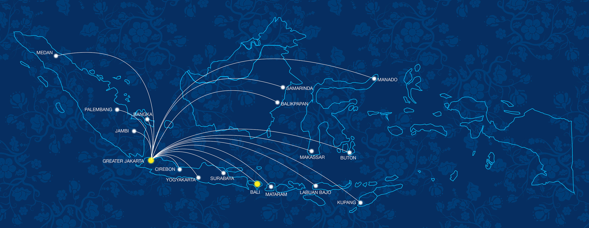

Welcome to Siloam Hospitals
The Largest Healthcare Provider of Choice in Indonesia
Save This Number to Save Each Other
Call us for any emergency cases
Partner in Healthcare
Our highly qualified team is ready to help you

Bangsa Yang Sehat Untuk Masa Depan Yang Cerah
Untuk informasi dan pendaftaran, hubungi 1-500-181